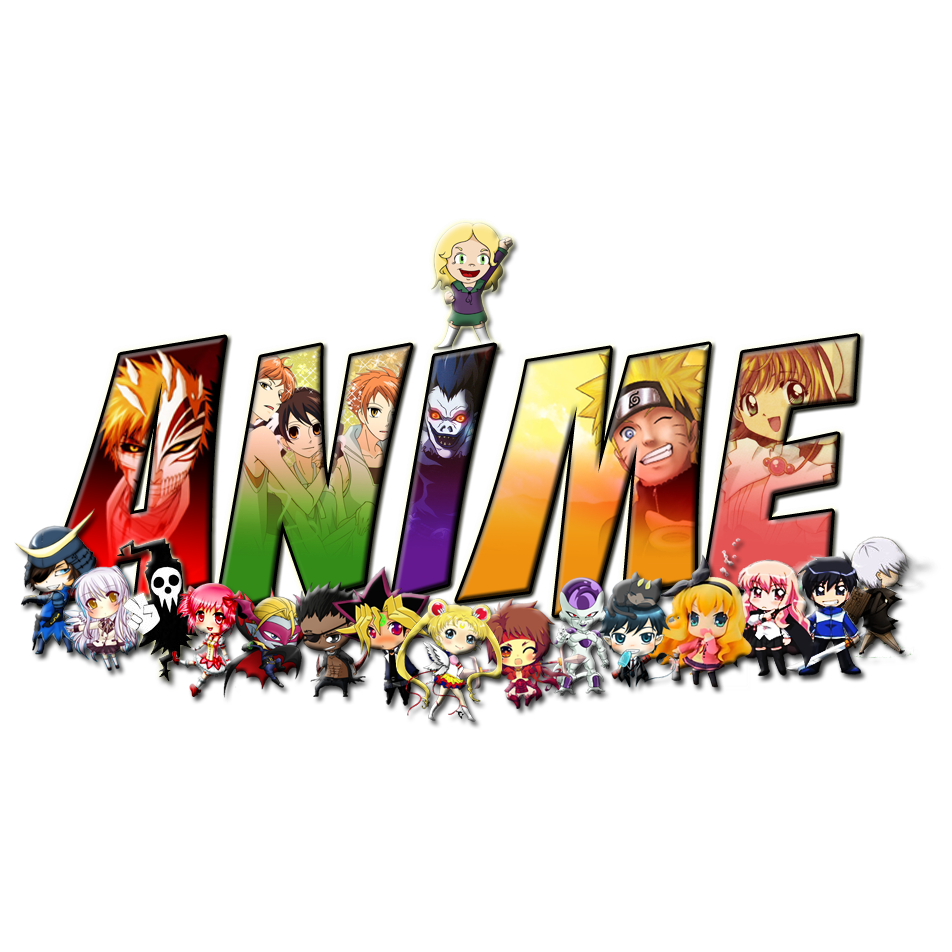

Anime

PROXIMOS ESTRENOS
Re:Zero kara Hajimeru Isekai Seikatsu 2nd Season
Estudio: White Fox
Genero: Psicológico,Drama,Thriller Fantasía
Yahari Ore no Seishun Love Comedy wa Machigatteiru. Kan
Estudio: Feel.
Genero: Slice of Life Comedia Drama Romance escolar
Estreno: 10 de abril
Kaguya-sama wa Kokurasetai? Tensai-tachi no Renai Zunousen
Estudio: A-1 Pictures
Genero: Comedia Psicológico Romance Escolar Seinen
Sword Art Online: Alicization - War of Underworld 2nd Season
Estudio: A-1 Pictures
Genero: Acción Juego Aventura Romance Fantasía
Fruits Basket 2nd Season
Genero: Slice of Life Comedia Drama Romance Shoujo
Honzuki no Gekokujou: Shisho ni Naru Tame ni wa Shudan wo Erandeiraremasen 2nd Season
Estreno 5 de Abril
Genero: Slice of Life Fantasía
No Guns Life 2nd Season
Genero: Acción Sci-Fi Seinen
Otome Game no Hametsu Flag shika Nai Akuyaku Reijou ni Tensei shiteshimatta ...
Estudio : Silver Link
Genero: Comedia Drama Romance Fantasía Escolar
BNA
Estudio: TRigger
Genero: Fantasía
Gleipnir
Estudio: Pine Jam
Genero: Acción Misterio Supernatural Ecchi Seinen
Tsugu Tsugumomo
Estudio: Zero-G
Genero: Acción Comedia Ecchi Escolar Seinen Supernatural
Yesterday wo Utatte
Estreno: 5 de Abril
Genero: Slice of Life Drama Romance Seinen
Jashin-chan Dropkick'
Genero: Comedia Supernatural
Yu☆Gi☆Oh!: Sevens
Genero: Action Juegos Fantasía Shounen
Kakushigoto (TV)
Estudio: Ajia-Do
Estreno 2 de Abril
Genero: Slice of Life Comedia Shounen
Kingdom 3rd Season
Estudio: Signpost
Estreno 6 de Abril
Genero: Acción Militar Histórico Seinen
Hachi-nan tte, Sore wa Nai deshou!
Estudio: Shin-Ei Animation, SynergySP
Genero: Acción Fantasía
Maou Gakuin no Futekigousha: Shijou Saikyou no Maou no Shiso, Tensei shite Shison-tachi no Gakkou e
Estudio: Silver Link.
Genero: Magia Fantasía Escolar
Appare-Ranman!
Estudio: P.A. Works
Estreno: 10 de Abril
Genero: Histórico
Arte
Estudio: Seven Arcs
Estreno: 4 de Abril
Genero: Slice of Life Histórico Drama Romance Seinen
Shironeko Project: Zero Chronicle
Estudio: Project No.9
Estreno: 6 de Abril
Genero: Acción Aventura Magia Fantasía
Tamayomi
Estudio: Studio A-CAT
Genero: Spokon Escolar
Nami yo Kiitekure
Estudio: Sunrise
Estreno: 3 de Abril
Genero: Comedia Drama Romance Seinen
Vlad Love
Estudios: Drive y Production I.G
Genero: Comedia Supernatural Vampiros Escolar
Kitsutsuki Tanteidokoro
Estudio: LIDENFILMS
Estreno: 13 de Abril
Genero: Misterio Histórico
Fugou Keiji: Balance:Unlimited
Estudio:CloverWorks
Genero: Mysterio
Houkago Teibou Nisshi
Estudio: Doga Kobo
Genero: Slice of Life Comedia Escolar Seinen
Major 2nd (TV) 2nd Season
Estudio: OLM
Estreno: 4 de Abril
Genero: Comedia Spokon Drama Shounen
Gal to Kyouryuu
Estreno 5 de Abril
Gnero: Comedia Seinen Slice of Life
Shin Sakura Taisen the Animation
Estudio: SANZIGEN
Genero: Sci-Fi Aventura Mecha Shounen
Tsukiuta. The Animation 2
Estudio: Children's Playground Entertainment
Genero: Musical
Listeners
Estudio:MAPPA
Genero: Sci-Fi Musical
Argonavis from BanG Dream!
Estudio: SANZIGEN
Estreno: 11 de Abril
Genero: Musical
Bungou to Alchemist: Shinpan no Haguruma
Estudio: OLM
Genero: Acción Aventura Fantasía
Shachou, Battle no Jikan Desu!
Estudio: C2C
Genero: Acción aventura Fantasía
Shadowverse (TV)
Estudio: Zexcs
Genero: Fantasía Videojuegos
Kiratto Pri☆chan Season 3
Estudio: Tatsunoko Production
Genero: Musical Slice of Life Comedia Magia Shouj
Tomica Kizuna Gattai: Earth Granner
Estudio: OLM
Genero: Acción Sci-Fi AventuraMecha
Olympia Kyklos
Genero: Slice of Life Comedia Histórico Spokon Seinen
Kami no Tou (Torre de Dios)
Genero: Acción Aventura Misterio Drama Fantasía
Videojuegos
PROXIMOS LANZAMIENTOS
MARZO
The Longing
Plataforma: PC
Estreno: 05 de marzo
Black Mesa
Plataforma: PC
Estreno: 5 de marzo
Pokémon Mundo Misterioso: Equipo de Rescate DX
Plataforma: NSW
Estreno: 6 de marzo
Ori and the Will of the Wisps
Plataforma: PC, XBO
Estreno: 11 de marzo
Nioh 2
Plataforma: PS4
Estreno: 13 de marzo
Langrisser I & II
Plataforma: PC, PS4, NSW
Estreno: 13 de marzo
My Hero: One's Justice 2
Plataforma: PC, PS4, XBO
Estreno: 13 de marzo
MLB The Show 20
Plataforma: PS4
Estreno: 17 de marzo
TT Isle of Man 2
Plataforma: PC, PS4, XBO
Estreno: 19 de marzo
Half-Life: Alyx
Plataforma: PC
Estreno: 23 de marzo
One Piece: Pirate Warriors 4
Plataforma: PS4, XBO, PC
Estreno: 27 de marzo
Persona 5 Royal
Plataforma: PS4
Estreno: 31 de marzo
Peliculas

PROXIMOS ESTRENOS
Nakitai Watashi wa Neko wo Kaburu
Estudio: Studio Colorido
Estreno: 5 de Junio
Genero: Drama Magia Romance
Cider no You ni Kotoba ga Wakiagaru
Estudio: Signal.MD, Sublimation
Estreno 15 de Mayo
Genero: Musical
Omoi, Omoware, Furi, Furare
Estudio: A-1 Pictures
Estreno 29 de mayo
Genero: Drama Romance Escolar Shoujo
Princess Principal: Crown Handler 1
Estudio:Actas
Estreno 10 de Abril
Genero: Acción Histórico Misterio
Violet Evergarden Movie
Estudio : Kyoto Animation
Estreno 24 de Abril
Genero: Drama Fantasía Slice of Life
Evangelion: 3.0+1.0
Estudio: Khara
Estreno 27 de Junio
Genero: Acción Sci-Fi Mecha
Detective Conan Movie 24: Hiiro no Dangan
Estudio: TMS Entertainment
Estreno: 17 de Abril
Genero: Acción Comedia Drama Misterio Policíal Shounen
Majo Minarai wo Sagashite
Estudio: Toei Animation
Estreno: 15 de MAyo
Genero: Comedia Magia Shoujo
Shoujo Kageki Revue Starlight: Rondo Rondo Rondo
Estudio: Kinema Citrus
Estreno 29 de MAyo
Genero: Musical Escolar
Crayon Shin-chan Movie 28: Gekitotsu! Rakugaki Kingdom to Hobo Yonin no Yuusha
Estreno: 24 de Abril
Genero: Comedia Seinen